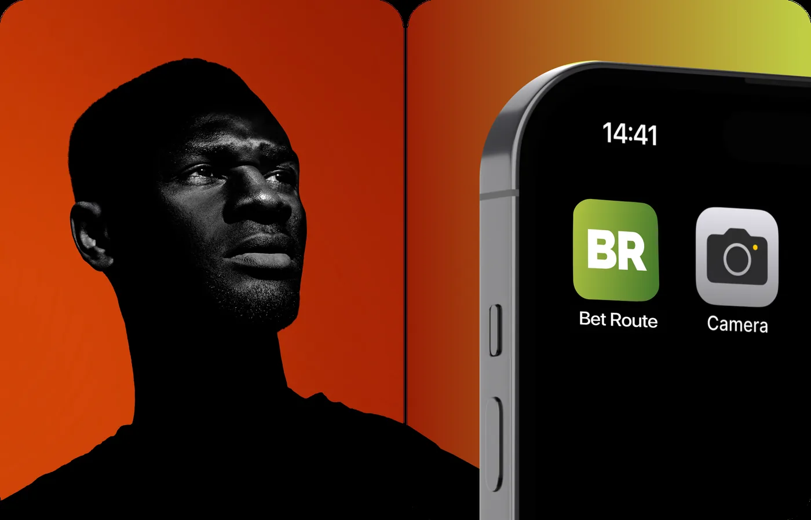

Developing the following product process based on the identified problem.
By following this approach, I aimed to make the registration flow easier and more efficient, leading to better user onboarding and higher conversion rates.

We conducted user interviews and usability testing to gather qualitative insights into why users struggle with registration.
[ Usability testing tasks ]
Prioritizing hypotheses strategically based on the highest RICE scores.
I focused on designing solutions that address the most significant pain points while optimizing effort and resources.
01 / 03
This section showcases how hypotheses are implemented in the design.
I concentrated on creating solutions that tackle the key pain points effectively while maximizing efficiency and minimizing resource use.
[ Before → After ]